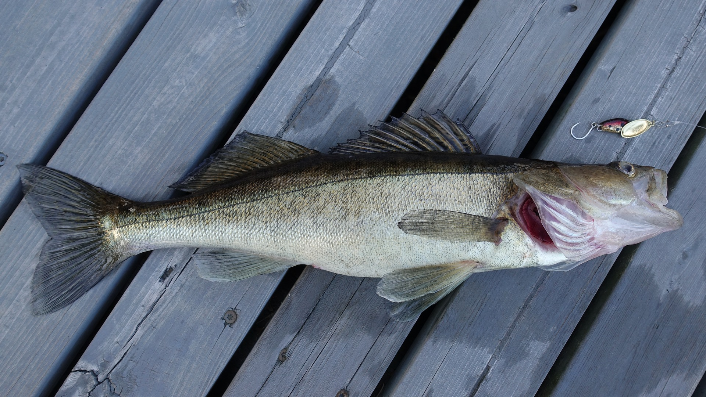
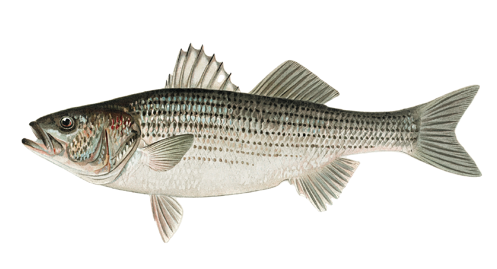

L'une des espèces les plus rechercher parmis les pêcheurs pour leur chair savoureuse et pour leur défi sportif qu'il procure. Leur taille varie entre 27cm à 57 cm et paisse en moyenne 6kg au Québec.

Elle est très rechercher pour leur combat agressifs et surtout pour la pêche sportive. Leur taille varie entre 9cm à 36cm et paisse en moyenne 1.6kg au Québec.
L'une des espèces les plus rechercher en Gaspésie pour la qualité de leur chair et pour leur combativité. Leur taille varie entre 10cm à 70cm et paisse en moyenne 3.5kg au Québec.

Le maquareau est un poisson qui vie en bancs et surtout dans les eaux côtières. Leur taille varie entre 30cm à 40cm et paisse en moyenne 0.5kg au Québec.
L,'esturgeon jaune une des plus gros poissons du Québec est un poisson surtout pĉcher récréativement. Leur taille varie entre 52cm à 136cm et paisse en moyenne 25kg au Québec.